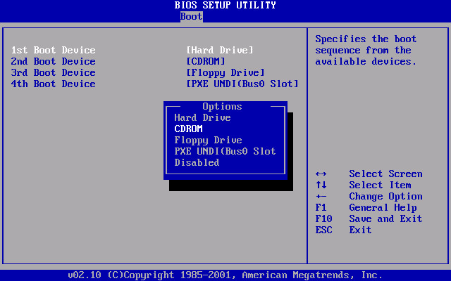
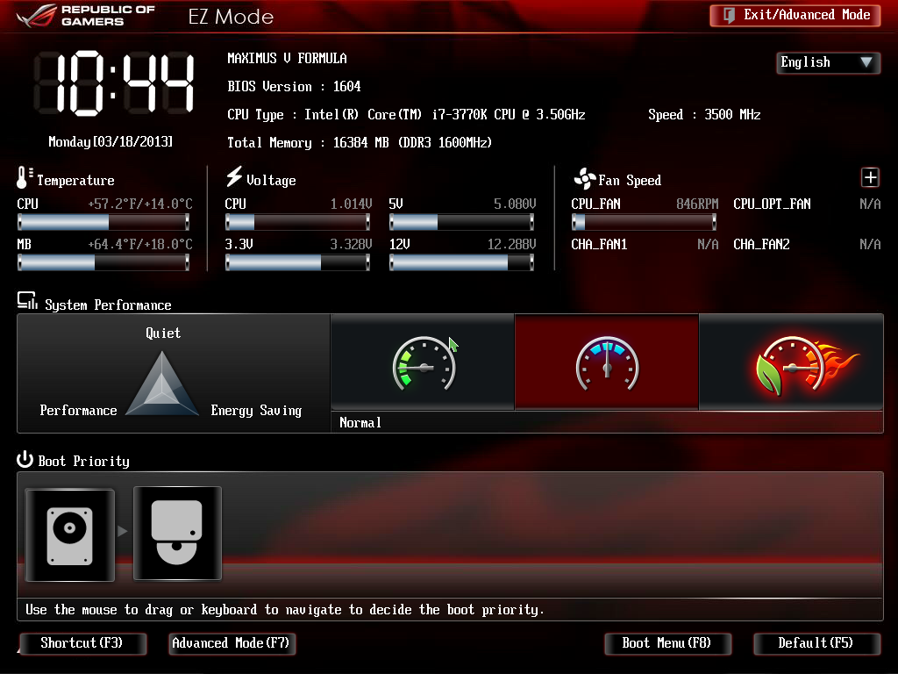

<html>
  <Head>
<meta http-equiv="Content-Type" content="text/html; charset=utf-8">

    
<link rel="stylesheet" href="../static/css/bootstrap.min.css"/>
<link rel="stylesheet" href="../static/css/bootstrap-theme.min.css"/>


    <link rel="stylesheet" href="../static/css/fonts/crmison.css"/>
    <link rel="stylesheet" href="../static/css/fonts/fira_code.css"/>
    <link rel="stylesheet" href="../static/css/fonts/ptsans.css"/>
    <link rel="stylesheet" href="../static/css/katex.min.css"/>
    <link rel="stylesheet" href="../static/css/wiki.css"/>
    <link rel="stylesheet" href="../static/css/codehilite.css"/>

    <script src="../static/js/jquery.min.js"></script>
    <script src="../static/js/bootstrap.bundle.min.js"></script>
    <script src="../static/js/katex.min.js"></script>
    
    

    <title>为 Bare-Metal 编程：编译、链接与加载</title>
  </Head>
  <body>
   
   
<nav class="navbar fixed-top navbar-expand-lg navbar-dark bg-dark">
  <a class="navbar-barnd" href="index.html">Yanyan's Wiki</a>
  <div class="collapse navbar-collapse">
    <div class="navbar-nav">
      <a class="nav-item nav-link active" href="OS2020.html">
        
        操作系统 (2020)</a>
      <a class="nav-item nav-link active" href="SysLab2020.html">
        计算机系统综合实验 (2020)</a>
      <a class="nav-item nav-link active" href="ICS_NJU.html"> 加入我们</a>
    </div>
    <form class="form-inline" autocomplete="off">
      <input id="token-input" type="text" oninput="login();" maxlength="16"
        data-toggle="tooltip" data-placement="bottom"
        title="用于确定身份的作业提交 SHA-1 hash digest。更改后回车或刷新网页生效"></input>
    </form>
  </div>
</nav>

<center>
  <div class="article-container">
    <div class="article">
      <h1 id="bare-metal">为 Bare-Metal 编程：编译、链接与加载</h1>
<div markdown="1"><div class="fenced fenced-green"><div>
<h4 id="c-bare-metal">怎么才能让 C 程序在 bare-metal 上运行起来？</h4>
<p>Bare-metal 运行的程序和操作系统上的程序不一样——当我们面对 bare-metal 的时候，几乎<strong>每一行</strong>代码都是自己编写的，包括库函数，甚至连帮我们加载 <code>main</code> 函数的代码都需要自己写。</p>
<p>因此，怎样让 C 程序运行起来，是 “写操作系统” 新手最大的困惑之一，如果思考一下：</p>
<ul>
<li>为了使程序能运行，当然需要经过编译链接的过程。就假设最简单的情况：生成静态链接的 ELF 格式的二进制文件好了。</li>
<li>二进制文件假设代码、数据存在于地址空间的指定位置。那么是谁来完成这件事？</li>
<li><code>main</code> 在二进制文件中的地址是不固定的。是谁调用的 <code>main()</code>？</li>
<li>我们需要自己动手实现各种库函数，那 <code>printf</code> (输出到屏幕), <code>malloc</code> (动态分配内存)又是如何实现的？</li>
</ul>
</div></div></div>

<p>为了理解 C 程序是如何运行在裸机 (bare-metal) 上的，我们首先理解 C 程序是如何从源代码 (文本文件) 最终在操作系统上运行起来的。为此，我们讲解一个小例子 (<code>say.c</code> 和 <code>main.c</code> 组成的小项目) 在操作系统上以及 AbstractMachine 上的编译、链接和加载运行的过程。</p>
<div class="codehilite"><pre><span></span><span class="c1">// say.c</span>
<span class="kt">void</span> <span class="nf">_putc</span><span class="p">(</span><span class="kt">char</span> <span class="n">ch</span><span class="p">);</span>
<span class="kt">int</span> <span class="nf">putchar</span><span class="p">(</span><span class="kt">int</span> <span class="n">ch</span><span class="p">);</span>

<span class="kt">void</span> <span class="nf">say</span><span class="p">(</span><span class="k">const</span> <span class="kt">char</span> <span class="o">*</span><span class="n">s</span><span class="p">)</span> <span class="p">{</span>
  <span class="k">for</span> <span class="p">(;</span> <span class="o">*</span><span class="n">s</span><span class="p">;</span> <span class="n">s</span><span class="o">++</span><span class="p">)</span> <span class="p">{</span>
<span class="cp">#ifdef __ARCH__</span>
    <span class="n">_putc</span><span class="p">(</span><span class="o">*</span><span class="n">s</span><span class="p">);</span> <span class="c1">// AbstractMachine，没有 libc，调用 TRM API 打印字符</span>
<span class="cp">#else</span>
    <span class="n">putchar</span><span class="p">(</span><span class="o">*</span><span class="n">s</span><span class="p">);</span> <span class="c1">// 操作系统，调用 libc 打印字符</span>
<span class="cp">#endif</span>
  <span class="p">}</span>
<span class="p">}</span>
</pre></div>


<div class="codehilite"><pre><span></span><span class="c1">// main.c</span>
<span class="kt">void</span> <span class="nf">say</span><span class="p">(</span><span class="k">const</span> <span class="kt">char</span> <span class="o">*</span><span class="n">s</span><span class="p">);</span>
<span class="kt">int</span> <span class="nf">main</span><span class="p">()</span> <span class="p">{</span>
  <span class="n">say</span><span class="p">(</span><span class="s">"hello</span><span class="se">\n</span><span class="s">"</span><span class="p">);</span>
<span class="p">}</span>
</pre></div>


<p>以下完整的流程是操作系统上 (hosted) 和 bare-metal 上共同的：</p>
<div class="codehilite"><pre><span></span><span class="err">main.c  -&gt; 编译 (gcc -c) -&gt; a.o -+ </span>
<span class="err">                                 \</span>
<span class="err"> say.c  -&gt; 编译 (gcc -c) -&gt; b.o  -&gt; 链接 (ld) -&gt; a.out -&gt; 加载 (loader)</span>
</pre></div>


<h2 id="c">操作系统上的 C 程序</h2>
<h3 id="1">1. 编译</h3>
<p>我们使用 gcc 把源代码编译成可重定位的二进制文件：</p>
<div class="codehilite"><pre><span></span>$ gcc -c -O2 -o main.o main.c
$ gcc -c -O2 -o say.o say.c
$ file say.o main.o
say.o:  ELF 64-bit LSB relocatable, x86-64, version 1 (SYSV), not stripped
main.o: ELF 64-bit LSB relocatable, x86-64, version 1 (SYSV), not stripped
</pre></div>


<p>“relocatable” 的含义是虽然生成了指令序列，但暂时还不确定它们在二进制文件中的位置。我们可以查看生成的指令序列：</p>
<div class="codehilite"><pre><span></span>$ objdump -d main.o
0000000000000000 &lt;main&gt;:
   0:   48 8d 3d 00 00 00 00    lea    0x0(%rip),%rdi        # 7 &lt;main+0x7&gt;
   7:   48 83 ec 08             sub    $0x8,%rsp
   b:   e8 00 00 00 00          callq  10 &lt;main+0x10&gt;
  10:   31 c0                   xor    %eax,%eax
  12:   48 83 c4 08             add    $0x8,%rsp
  16:   c3                      retq   
</pre></div>


<p>可以看到 relocatable 的代码从 0 开始编址；因为 <code>main</code> 并不知道 <code>say</code> 的代码在何处，所以虽然生成了 opcode 为 <code>0xe8</code> 的 <code>call</code> 指令 (对应 <code>say("...")</code> 的函数调用)，但没有生成跳转的偏移量 (<code>say.c</code> 中向 <code>putchar</code> 的调用也生成同样的 <code>call</code> 指令)：</p>
<div class="codehilite"><pre><span></span>   b:   e8 00 00 00 00          callq  10 &lt;main+0x10&gt;
</pre></div>


<p>类似的，<code>say</code> 的第一个参数 (通过 <code>%rdi</code> 寄存器传递) 是通过如下 <code>lea</code> 指令获取的，它的位置同样暂时没有确定：</p>
<div class="codehilite"><pre><span></span>   0:   48 8d 3d 00 00 00 00    lea    0x0(%rip),%rdi        # 7 &lt;main+0x7&gt;
</pre></div>


<h3 id="2">2. 链接</h3>
<p>通常，我们使用 gcc 帮助我们完成链接：</p>
<div class="codehilite"><pre><span></span>$ gcc main.o say.o
$ ./a.out
hello
</pre></div>


<p>如果直接使用 <code>ld</code> 命令链接，则会报错：</p>
<div class="codehilite"><pre><span></span>$ ld main.o say.o
ld main.o say.o
ld: warning: cannot find entry symbol _start; defaulting to 00000000004000b0
say.o: In function `say':
say.c:(.text+0x15): undefined reference to `putchar'
</pre></div>


<p>首先，我们的程序没有入口 (<code>_start</code>)，其次，我们链接的对象中没有 <code>putchar</code> 函数。我们可以给 gcc 传递额外的参数，查看 <code>ld</code> 的选项：</p>
<div class="codehilite"><pre><span></span>gcc -Wl,--verbose main.o say.o
</pre></div>


<p>你会发现链接的过程比想象中复杂得多。用以下简化了的命令可以得到可运行的 hello 程序：</p>
<div class="codehilite"><pre><span></span>$ ld -dynamic-linker /lib64/ld-linux-x86-64.so.2 <span class="se">\</span>
  /usr/lib/x86_64-linux-gnu/crt1.o <span class="se">\</span>
  /usr/lib/x86_64-linux-gnu/crti.o <span class="se">\</span>
  main.o say.o -lc <span class="se">\</span>
  /usr/lib/x86_64-linux-gnu/crtn.o
$ ./a.out
hello
</pre></div>


<p>为什么这么复杂？还有好多没见过的文件！这是因为我们的二进制文件要运行在操作系统上，就必须遵循操作系统的规则，调用操作系统提供的 API 完成加载。加载器也是代码的一部分，当然应该被链接进来。链接文件的具体解释：</p>
<ul>
<li><code>ld-linux-x86-64.so</code> 负责动态链接库的加载，没有它就无法加载动态链接库 (libc)。</li>
<li><code>crt*.o</code> 是 C Runtime 的缩写，即 C 程序运行所必须的一些环境，例如程序的入口函数 <code>_start</code> (二进制文件并不是从 <code>main</code> 开始执行的！)、<code>atexit</code> 注册回调函数的执行等。</li>
<li><code>-lc</code> 表示链接 glibc。</li>
</ul>
<p>链接后得到一个 ELF 格式的可执行文件：</p>
<div class="codehilite"><pre><span></span>$ file a.out
a.out: ELF 64-bit LSB executable, x86-64, version 1 (SYSV), dynamically linked, interpreter /lib64/l, for GNU/Linux 3.2.0, not stripped
$ objdump -d a.out
...
0000000000400402 &lt;main&gt;:
  400402:       55                      push   %rbp
  400403:       48 89 e5                mov    %rsp,%rbp
  400406:       48 8d 3d c7 00 00 00    lea    0xc7(%rip),%rdi        # 4004d4 &lt;_IO_stdin_used+0x4&gt;
  40040d:       b8 00 00 00 00          mov    $0x0,%eax
  400412:       e8 07 00 00 00          callq  40041e &lt;say&gt;
  400417:       b8 00 00 00 00          mov    $0x0,%eax
  40041c:       5d                      pop    %rbp
  40041d:       c3                      retq   

000000000040041e &lt;say&gt;:
  40041e:       55                      push   %rbp
  40041f:       48 89 e5                mov    %rsp,%rbp
  400422:       48 83 ec 10             sub    $0x10,%rsp
  400426:       48 89 7d f8             mov    %rdi,-0x8(%rbp)
  40042a:       eb 16                   jmp    400442 &lt;say+0x24&gt;
  40042c:       48 8b 45 f8             mov    -0x8(%rbp),%rax
  400430:       0f b6 00                movzbl (%rax),%eax
  400433:       0f be c0                movsbl %al,%eax
  400436:       89 c7                   mov    %eax,%edi
  400438:       e8 83 ff ff ff          callq  4003c0 &lt;putchar@plt&gt;
  40043d:       48 83 45 f8 01          addq   $0x1,-0x8(%rbp)
  400442:       48 8b 45 f8             mov    -0x8(%rbp),%rax
  400446:       0f b6 00                movzbl (%rax),%eax
  400449:       84 c0                   test   %al,%al
  40044b:       75 df                   jne    40042c &lt;say+0xe&gt;
  40044d:       90                      nop
  40044e:       c9                      leaveq 
  40044f:       c3                      retq   
...
</pre></div>


<h3 id="3">3. 加载</h3>
<div markdown="1"><div class="fenced fenced-green"><div>
<h4 id="_1">警告：大量的细节</h4>
<p>程序加载的过程十分复杂，甚至有一些你目前可能暂时难以理解的地方 (例如 vvar, vdso, 变化的 <code>a.out</code> 等)。我们会用一学期的课程回答这些问题。所以遇到不明白的地方，跳过即可。随着课程的进展，你对这个过程的理解会不断加深。</p>
</div></div></div>

<p>完成链接后，在操作系统的终端程序中使用 <code>./a.out</code> 运行我们的程序，流程大致如下 (学完《操作系统》课后，你将会对这个流程有更深入的认识)：</p>
<ul>
<li>Shell 接收到命令后，在操作系统中使用 <code>fork()</code> 创建一个新的进程。</li>
<li>在子进程中使用 <code>execve()</code> 加载 <code>a.out</code>。操作系统内核中的加载器识别出 <code>a.out</code> 是一个动态链接文件，做出必要的内存映射，从 <code>ld-linux-x86-64.so</code> 的代码开始执行，把动态链接库映射到进程的地址空间中，然后跳转到 <code>a.out</code> 的 <code>_start</code> 执行，初始化 C 语言运行环境，最终开始执行 <code>main</code>。</li>
<li>程序运行过程中，如需进行输入/输出等操作 (如 libc 中的 <code>putchar</code>)，则会使用特殊的指令 (例如 x86 系统上的 <code>int</code> 或<code>syscall</code>) 发出系统调用请求操作系统执行。典型的例子是 <code>printf</code> 会调用 <code>write</code> 系统调用，向编号为 <code>1</code> 的文件描述符写入数据。</li>
</ul>
<p>怎么在实际的系统上观察上述的行为？我们有调试器！gdb 为我们提供了 <code>starti</code> 指令，可以在程序执行第一条指令时就停下：</p>
<div class="codehilite"><pre><span></span>$ gdb a.out
GNU gdb (Ubuntu 8.1-0ubuntu3.2) 8.1.0.20180409-git
...
(gdb) starti  # 启动程序，并在第一条指令上暂停
Starting program: /tmp/a/a.out 

Program stopped.
0x00007ffff7dd6090 in _start () from /lib64/ld-linux-x86-64.so.2
(gdb) bt f    # backtrace full，打印堆栈信息
#0  0x00007ffff7dd6090 in _start () from /lib64/ld-linux-x86-64.so.2
        library_path = 0x0
        version_info = 0
        any_debug = 0
        _dl_rtld_libname = {name = 0x0, next = 0x0, dont_free = 0}
        relocate_time = 0
        _dl_rtld_libname2 = {name = 0x0, next = 0x0, dont_free = 0}
        start_time = 0
        tls_init_tp_called = false
        load_time = 0
        audit_list = 0x0
        preloadlist = 0x0
        __GI__dl_argv = 0x0
        _dl_argc = 0
        audit_list_string = 0x0
        _rtld_global = {_dl_ns = {{_ns_loaded = 0x0, _ns_nloaded = 0,
                       ...
#1  0x0000000000000001 in ?? ()
No symbol table info available.
...
</pre></div>


<p>操作系统的加载器完成了 <code>ld-linux-x86-64.so.2</code> 的加载，并给它传递了相应的参数。我们可以查看此时的进程信息 (这些内存都是操作系统加载的)：</p>
<div class="codehilite"><pre><span></span>(gdb) info inferiors  # 打印进程/线程信息
  Num  Description       Executable        
* 1    process 18137     /tmp/hello/a.out
(gdb) !cat /proc/18137/maps  # 打印进程的内存信息
00400000-00401000 r-xp 00000000 08:02 3538982             /tmp/hello/a.out
00600000-00602000 rw-p 00000000 08:02 3538982             /tmp/hello/a.out
7ffff7dd5000-7ffff7dfc000 r-xp 00000000 08:02 4985556     /lib/x86_64-linux-gnu/ld-2.27.so
7ffff7ff7000-7ffff7ffa000 r--p 00000000 00:00 0           [vvar]
7ffff7ffa000-7ffff7ffc000 r-xp 00000000 00:00 0           [vdso]
7ffff7ffc000-7ffff7ffe000 rw-p 00027000 08:02 4985556     /lib/x86_64-linux-gnu/ld-2.27.so
7ffff7ffe000-7ffff7fff000 rw-p 00000000 00:00 0 
7ffffffde000-7ffffffff000 rw-p 00000000 00:00 0           [stack]
ffffffffff600000-ffffffffff601000 r-xp 00000000 00:00 0   [vsyscall]
</pre></div>


<p>如果我们在 <code>_start</code> 设置断点，会发现此时已经加载完成：</p>
<div class="codehilite"><pre><span></span>(gdb) b _start  # breakpoint 设置断点
Breakpoint 1 at 0x4003d0
(gdb) c  # continue 继续执行
Continuing.

Breakpoint 1, 0x00000000004003d0 in _start ()
(gdb) !cat /proc/18137/maps
00400000-00401000 r-xp 00000000 08:02 3538982             /tmp/hello/a.out
00600000-00601000 r--p 00000000 08:02 3538982             /tmp/hello/a.out
00601000-00602000 rw-p 00001000 08:02 3538982             /tmp/hello/a.out
7ffff79e4000-7ffff7bcb000 r-xp 00000000 08:02 4985568     /lib/x86_64-linux-gnu/libc-2.27.so
7ffff7bcb000-7ffff7dcb000 ---p 001e7000 08:02 4985568     /lib/x86_64-linux-gnu/libc-2.27.so
7ffff7dcb000-7ffff7dcf000 r--p 001e7000 08:02 4985568     /lib/x86_64-linux-gnu/libc-2.27.so
7ffff7dcf000-7ffff7dd1000 rw-p 001eb000 08:02 4985568     /lib/x86_64-linux-gnu/libc-2.27.so
7ffff7dd1000-7ffff7dd5000 rw-p 00000000 00:00 0 
7ffff7dd5000-7ffff7dfc000 r-xp 00000000 08:02 4985556     /lib/x86_64-linux-gnu/ld-2.27.so
7ffff7fde000-7ffff7fe0000 rw-p 00000000 00:00 0 
7ffff7ff7000-7ffff7ffa000 r--p 00000000 00:00 0           [vvar]
7ffff7ffa000-7ffff7ffc000 r-xp 00000000 00:00 0           [vdso]
7ffff7ffc000-7ffff7ffd000 r--p 00027000 08:02 4985556     /lib/x86_64-linux-gnu/ld-2.27.so
7ffff7ffd000-7ffff7ffe000 rw-p 00028000 08:02 4985556     /lib/x86_64-linux-gnu/ld-2.27.so
7ffff7ffe000-7ffff7fff000 rw-p 00000000 00:00 0 
7ffffffde000-7ffffffff000 rw-p 00000000 00:00 0           [stack]
ffffffffff600000-ffffffffff601000 r-xp 00000000 00:00 0   [vsyscall]
</pre></div>


<p>地址空间中已有 <code>a.out</code>, libc, 堆区、栈区等我们熟悉的东西，libc 的 <code>_start</code> 完成初始化后会调用 <code>main()</code>。这真是一段漫长的旅途！</p>
<h2 id="bare-metal-c">Bare-Metal 上的 C 程序</h2>
<p>配置完毕后，我们需要一个 Makefile，就能把 hello 程序编译到 bare-metal 执行：</p>
<div class="codehilite"><pre><span></span><span class="nv">NAME</span> <span class="o">:=</span> hello
<span class="nv">SRCS</span> <span class="o">:=</span> main.c say.c
<span class="cp">include $(AM_HOME)/Makefile.app</span>
</pre></div>


<p>在终端中执行 <code>make -nB ARCH=x86_64-qemu</code> 可以查看完整的编译、链接到 x86-64 的过程 (不实际进行编译)。</p>
<h3 id="1_1">1. 编译</h3>
<p>编译器的功能是把 <code>.c</code> 文件翻译成可重定位的二进制目标文件 (<code>.o</code>)。这一步对于有无操作系统来说差别并不大，最主要的区别是在 bare-metal 是 “freestanding” 的运行环境，没有办法调用依赖于操作系统的库函数，例如 <code>printf</code>, <code>malloc</code> 等 (最终它们会调用操作系统)。</p>
<p>编译器 (gcc) 提供了选项帮我们生成不依赖操作系统的目标文件，例如对 <code>-ffreestanding</code> (<code>-fno-hosted</code>) 选项的文档：</p>
<blockquote>
<p>Assert that compilation targets a freestanding environment.  This implies <code>-fno-builtin</code>.  A freestanding environment is one in which the standard library may not exist, and program startup may not necessarily be at "main".  The most obvious example is an OS kernel.  This is equivalent to <code>-fno-hosted</code>.</p>
</blockquote>
<p>除了编译器做出一些代码生成的限制之外，bare-metal 程序的编译和操作系统上程序没有任何区别。事实上，对于我们的示例程序来说，<code>main</code> 和 <code>say</code> 编译出的汇编代码是完全一致的，除了 relocation table 中的重定位信息不同 (bare-metal 上会调用 <code>_putc</code> 而不是 <code>putchar</code>)。</p>
<h3 id="2_1">2. 链接</h3>
<p>可能出乎意料，因为没有操作系统，bare-metal 程序的链接比操作系统上的情况还简单一些！我们使用的链接命令是：</p>
<div class="codehilite"><pre><span></span>$ ld -melf_x86_64 -N -Ttext-segment=0x00100000 -o build/hello-x86_64-qemu.o \
  main.o say.o am-x86_64-qemu.a klib-x86_64-qemu.a
</pre></div>


<p>只链接了 <code>main.o</code>, <code>say.o</code> 和必要的库函数 (AbstractMachine 和 klib；在这个例子中，我们甚至可以不链接 klib 也能正常运行)。使用的链接选项：</p>
<ul>
<li><code>-melf_x86_64</code>：指定链接为 x86_64 ELF 格式；</li>
<li><code>-N</code>：标记 <code>.text</code> 和 <code>.data</code> 都可写，这样它们可以一起加载 (而不需要对齐到页面边界)，减少可执行文件的大小；</li>
<li><code>-Ttext-segment=0x00100000</code>：指定二进制文件应加载到地址 <code>0x00100000</code>。</li>
</ul>
<p>使用 <code>readelf</code> 命令查看 <code>hello-x86_64-qemu.o</code> 文件的信息：</p>
<div class="codehilite"><pre><span></span>$ readelf -a build/hello-x86_64-qemu.o
ELF Header:
  Magic:   7f 45 4c 46 02 01 01 00 00 00 00 00 00 00 00 00 
  Class:                             ELF64
  Data:                              2's complement, little endian
  Version:                           1 (current)
  OS/ABI:                            UNIX - System V
  ABI Version:                       0
  Type:                              EXEC (Executable file)
  Machine:                           Advanced Micro Devices X86-64
  Version:                           0x1
  Entry point address:               0x100100
  Start of program headers:          64 (bytes into file)
  Start of section headers:          65584 (bytes into file)
  ...
</pre></div>


<p>其中的 program headers 描述了需要加载的部分：加载这个文件的加载器需要把文件中从 <code>0xb0</code> (Offset) 开始的 <code>0x29ac</code> 字节 (<code>FileSiz</code>) 加载到内存的 <code>0x1000b0</code> 虚拟/物理地址 (VirtAddr/PhysAddr)，内存中的大小 <code>0x23f98</code> 字节 (<code>MemSiz</code>，超过 <code>FileSiz</code> 的内存清零)，标志为 RWE (可读、可写、可执行)。</p>
<div class="codehilite"><pre><span></span><span class="err">Program Headers:</span>
<span class="err">  Type           Offset             VirtAddr           PhysAddr</span>
<span class="err">                 FileSiz            MemSiz              Flags  Align</span>
<span class="err">  LOAD           0x00000000000000b0 0x00000000001000b0 0x00000000001000b0</span>
<span class="err">                 0x00000000000029ac 0x0000000000023f98  RWE    0x20</span>
<span class="err">  GNU_STACK      0x0000000000000000 0x0000000000000000 0x0000000000000000</span>
<span class="err">                 0x0000000000000000 0x0000000000000000  RWE    0x10</span>
</pre></div>


<p>实际上，这个程序可以直接在操作系统上被运行！如果你试着用 gdb 调试它，会发现程序从 <code>_start</code> (<code>0x100100</code>) 开始执行，但在执行了若干条指令后，在 <code>movabs %eax,0xb900001000</code> 时发生了 Segmentation Fault。</p>
<div markdown="1"><div class="fenced fenced-green"><div>
<h4 id="_start-movabs"><code>_start</code> 里没有 <code>movabs</code>？</h4>
<p>x86-64 AbstractMachine 上程序的入口在 <code>start64.S</code> 文件中：</p>
<div class="codehilite"><pre><span></span><span class="na">.code32</span>
<span class="na">.globl</span> <span class="no">_start</span>
<span class="nl">_start:</span>
  <span class="nf">movl</span>  <span class="no">$</span><span class="p">(</span><span class="no">PDPT_ADDR</span> <span class="err">|</span> <span class="no">PTE_P</span> <span class="err">|</span> <span class="no">PTE_W</span><span class="p">),</span> <span class="nv">%eax</span>
  <span class="nf">cmpl</span>  <span class="p">(</span><span class="no">PML4_ADDR</span><span class="p">),</span> <span class="nv">%eax</span>
  <span class="nf">je</span>    <span class="no">.long_mode_init</span>

  <span class="nf">movl</span>  <span class="no">$</span><span class="p">(</span><span class="no">PDPT_ADDR</span> <span class="err">|</span> <span class="no">PTE_P</span> <span class="err">|</span> <span class="no">PTE_W</span><span class="p">),</span> <span class="nv">%eax</span>
  <span class="nf">movl</span>  <span class="nv">%eax</span><span class="p">,</span> <span class="p">(</span><span class="no">PML4_ADDR</span><span class="p">)</span>
<span class="na">...</span>
</pre></div>


<p>这是一段 32-bit 代码——AbstractMachine 的加载器并没有进入 64-bit 模式；而 <code>hello-x86_64-qemu.o</code> 直接在操作系统上执行时，将代码解析为 64-bit 汇编，因此错误解析了 32-bit 指令，访问非法内存产生 Segmentation Fault。</p>
</div></div></div>

<p>只不过因为运行环境不同，执行到系统指令时，属于非法操作 crash 了。我们需要在 bare-metal 上加载它。所以我们会创建 <code>hello-x86_64-qemu</code> 的镜像文件：</p>
<div class="codehilite"><pre><span></span><span class="o">(</span> cat abstract-machine/am/src/x86/qemu/boot/mbr <span class="se">\</span>
  head -c <span class="m">1024</span> /dev/zero <span class="se">\</span>
  cat build/hello-x86_64-qemu.o <span class="o">)</span> <span class="se">\</span>
  &gt; /tmp/hello/build/hello-x86_64-qemu
</pre></div>


<p>镜像文件是由 512 字节的 “MBR”、1024 字节的空白 (用于存放 <code>main</code> 函数的参数) 和 <code>hello-x86_64-qemu.o</code> 组成的。用 <code>file</code> 类型可以识别出它：</p>
<div class="codehilite"><pre><span></span>$ file hello-x86_64-qemu
hello-x86_64-qemu:   DOS/MBR boot sector
</pre></div>


<h3 id="3_1">3. 加载</h3>
<p>我们在 qemu 全系统模拟器中运行完整的镜像 <code>hello-x86_64-qemu</code> (包含 <code>hello-x86_64-qemu.o</code>)。如果用一些特别的选项，就能近距离观察模拟器的执行：</p>
<div class="codehilite"><pre><span></span><span class="err">qemu-system-x86_64 -S -s -serial none -nographic hello-x86_64-qemu</span>
</pre></div>


<p>其中：</p>
<ul>
<li><code>-S</code> 在模拟器初始化完成 (CPU Reset) 后暂停</li>
<li><code>-s</code> 启动 gdb 调试服务器，可以使用 gdb 调试模拟器中的程序</li>
<li><code>-serial none</code> 忽略串口输入/输出</li>
<li><code>-nographics</code> 不启动图形界面</li>
</ul>
<p>我们可以在终端里启动一个 monitor (Online Judge 就处于这个模式)。</p>
<h4 id="31-cpu-reset">3.1 CPU Reset</h4>
<p>就像 NEMU 一样调试虚拟机，我们使用 <code>info registers</code> 查看 CPU Reset 后的寄存器状态。</p>
<div class="codehilite"><pre><span></span>QEMU 2.11.1 monitor - type 'help' for more information
(qemu) info registers 
EAX=00000000 EBX=00000000 ECX=00000000 EDX=00000663
ESI=00000000 EDI=00000000 EBP=00000000 ESP=00000000
EIP=0000fff0 EFL=00000002 [-------] CPL=0 II=0 A20=1 SMM=0 HLT=0
ES =0000 00000000 0000ffff 00009300
CS =f000 ffff0000 0000ffff 00009b00
SS =0000 00000000 0000ffff 00009300
DS =0000 00000000 0000ffff 00009300
FS =0000 00000000 0000ffff 00009300
GS =0000 00000000 0000ffff 00009300
LDT=0000 00000000 0000ffff 00008200
TR =0000 00000000 0000ffff 00008b00
GDT=     00000000 0000ffff
IDT=     00000000 0000ffff
CR0=60000010 CR2=00000000 CR3=00000000 CR4=00000000
DR0=0000000000000000 DR1=0000000000000000 DR2=0000000000000000 DR3=0000000000000000 
DR6=00000000ffff0ff0 DR7=0000000000000400
EFER=0000000000000000
FCW=037f FSW=0000 [ST=0] FTW=00 MXCSR=00001f80
FPR0=0000000000000000 0000 FPR1=0000000000000000 0000
FPR2=0000000000000000 0000 FPR3=0000000000000000 0000
FPR4=0000000000000000 0000 FPR5=0000000000000000 0000
FPR6=0000000000000000 0000 FPR7=0000000000000000 0000
XMM00=00000000000000000000000000000000 XMM01=00000000000000000000000000000000
XMM02=00000000000000000000000000000000 XMM03=00000000000000000000000000000000
XMM04=00000000000000000000000000000000 XMM05=00000000000000000000000000000000
XMM06=00000000000000000000000000000000 XMM07=00000000000000000000000000000000
(qemu) 
</pre></div>


<p>CPU Reset 后的状态涉及很多琐碎的硬件细节，这也是大家感到为 bare-metal 编程很神秘的原因。不过简单来讲，我们关心的状态只有两个：</p>
<ul>
<li><code>%cr0 = 0x60000010</code>，最低位 <code>PE</code>-bit 为 0，运行在 16-bit 模式 (现在 CPU 的行为就像 8086)</li>
<li><code>%cs = 0xf000</code>, <code>%ip = 0xfff0</code>，相当于 PC 指针位于 <code>0xffff0</code></li>
</ul>
<p>CPU Reset 后，硬件固件代码开始执行。</p>
<h4 id="32-firmware-master-boot-record">3.2 Firmware: 加载 Master Boot Record</h4>
<p>位于 <code>0xffff0</code> 的代码以内存映射的方式映射到只读的存储器 (固件，firmware，也称为 BIOS) 中。固件代码会进行一定的计算机状态检查 (比如著名的 “Keyboard not found, press any key to continue...”)。如果我们在 gdb 中使用 <code>target remote localhost:1234</code> 连接到 qemu (默认端口为 1234)，就可以开始单步调试固件代码。</p>
<p>在比较简单的 Legacy BIOS Firmware (Legacy Boot) 模式，固件会依次扫描系统中的存储设备 (磁盘、优盘等，Boot Order 通常可以设置)，然后将第一个可启动磁盘的前 512 字节 (主引导扇区, Master Boot Record, MBR) 加载到物理内存的 <code>0x7c00</code> 地址。以下是 AMI 公司在 1990s 的 BIOS Firmware 界面：</p>
<p></img></p>
<p>今天的 Firmware 有了 <a href="https://wiki.osdev.org/UEFI">UEFI 标准</a>，能更好地提供硬件的抽象、支持固件应用程序——今天的 “BIOS” 甚至有炫酷的图形界面 (不要小看图形界面，能显示图形意味着你得有总线、键盘、鼠标的驱动程序……)，固件复杂程度可比小型操作系统；UEFI 加载器也不再仅仅加载是 512 字节的 MBR，而是能加载任意 GPT 分区表上的 FAT 分区中存储的应用。Windows 8 开始就不再从支持 Legacy Boot 启动。</p>
<p></img></p>
<p>从容易理解的角度，我们编写操作系统时，依然从 Legacy Boot 启动，你只需要知道，AbstractMachine 和硬件的约定是磁盘镜像的前 512 字节将首先会被加载到物理内存中执行。</p>
<p>我们可以通过 gdb 连接到已经启动 (但暂停) 的 qemu 模拟器：</p>
<div class="codehilite"><pre><span></span>$ gdb
(gdb) target remote localhost:1234
Remote debugging using localhost:1234
0x000000000000fff0 in ?? ()
(gdb) b *0x7c00
Breakpoint 1 at 0x7c00
(gdb) c
Continuing.

Breakpoint 1, 0x0000000000007c00 in ?? ()
(gdb) x/16i $pc
=&gt; 0x7c00:  cli    
   0x7c01:  xor    %eax,%eax
   0x7c03:  mov    %eax,%ds
   0x7c05:  mov    %eax,%es
   0x7c07:  mov    %eax,%ss
   ...
</pre></div>


<p>使用 <code>layout asm</code> 进行指令级的调试 (调试 16-bit code 时 disassembler 会遇到一些小麻烦，但调试的基本功能是没问题的；借助其他工具如 nasm 可以正确查看代码)。</p>
<h4 id="33-boot-loader-elf">3.3 Boot Loader: 解析并加载 ELF 文件</h4>
<p>在 gdb 中看到的 <code>0x7c00</code> 地址的指令序列是我们的 boot loader 代码，存储在磁盘的前 512 字节。x86-64 的 AbstractMachine 在这 512 字节内完成 ELF 文件的加载。这部分代码位于 <code>am/src/x86/qemu/boot</code>，由一部分 16-bit 汇编 (<code>start.S</code>)，主要部分如下：</p>
<div class="codehilite"><pre><span></span><span class="na">.code16</span>
<span class="na">.globl</span> <span class="no">_start</span>
<span class="nl">_start:</span>
  <span class="nf">cli</span>

  <span class="nf">xorw</span>    <span class="nv">%ax</span><span class="p">,</span> <span class="nv">%ax</span>
  <span class="nf">movw</span>    <span class="nv">%ax</span><span class="p">,</span> <span class="nv">%ds</span>
  <span class="nf">movw</span>    <span class="nv">%ax</span><span class="p">,</span> <span class="nv">%es</span>
  <span class="nf">movw</span>    <span class="nv">%ax</span><span class="p">,</span> <span class="nv">%ss</span>

  <span class="nf">lgdt</span>    <span class="no">gdtdesc</span>
  <span class="nf">movl</span>    <span class="nv">%cr0</span><span class="p">,</span> <span class="nv">%eax</span>
  <span class="nf">orl</span>     <span class="no">$CR0_PE</span><span class="p">,</span> <span class="nv">%eax</span>
  <span class="nf">movl</span>    <span class="nv">%eax</span><span class="p">,</span> <span class="nv">%cr0</span>
  <span class="nf">ljmp</span>    <span class="no">$GDT_ENTRY</span><span class="p">(</span><span class="mi">1</span><span class="p">),</span> <span class="no">$start32</span>

<span class="na">.code32</span>
<span class="nl">start32:</span>
  <span class="nf">movw</span>    <span class="no">$GDT_ENTRY</span><span class="p">(</span><span class="mi">2</span><span class="p">),</span> <span class="nv">%ax</span>
  <span class="nf">movw</span>    <span class="nv">%ax</span><span class="p">,</span> <span class="nv">%ds</span>
  <span class="nf">movw</span>    <span class="nv">%ax</span><span class="p">,</span> <span class="nv">%es</span>
  <span class="nf">movw</span>    <span class="nv">%ax</span><span class="p">,</span> <span class="nv">%ss</span>

  <span class="nf">movl</span>    <span class="no">$0xa000</span><span class="p">,</span> <span class="nv">%esp</span>
  <span class="nf">call</span>    <span class="no">load_kernel</span>
</pre></div>


<p>这段代码 (不需要理解) 就是做一些必要的处理器设置，切换到 32-bit 模式，设置初始的栈顶指针 (<code>0xa000</code>)，然后跳转到 32-bit C 代码 <code>load_kernel</code> 执行。<code>load_kernel</code> 位于 <code>main.c</code> (有简化)：</p>
<div class="codehilite"><pre><span></span><span class="cp">#include</span> <span class="cpf">&lt;stdint.h&gt;</span><span class="cp"></span>
<span class="cp">#include</span> <span class="cpf">&lt;elf.h&gt;</span><span class="cp"></span>
<span class="cp">#include</span> <span class="cpf">&lt;x86.h&gt;</span><span class="cp"></span>

<span class="c1">// 调用 I/O 指令把磁盘上的数据读到内存指定位置；代码省略</span>
<span class="k">static</span> <span class="kr">inline</span> <span class="kt">void</span> <span class="nf">copy_from_disk</span><span class="p">(</span><span class="kt">void</span> <span class="o">*</span><span class="n">buf</span><span class="p">,</span> <span class="kt">int</span> <span class="n">nbytes</span><span class="p">,</span> <span class="kt">int</span> <span class="n">disk_offset</span><span class="p">);</span>

<span class="k">static</span> <span class="kt">void</span> <span class="nf">load_program</span><span class="p">(</span><span class="kt">uint32_t</span> <span class="n">filesz</span><span class="p">,</span> <span class="kt">uint32_t</span> <span class="n">memsz</span><span class="p">,</span> <span class="kt">uint32_t</span> <span class="n">paddr</span><span class="p">,</span> <span class="kt">uint32_t</span> <span class="n">offset</span><span class="p">)</span> <span class="p">{</span>
  <span class="n">copy_from_disk</span><span class="p">((</span><span class="kt">void</span> <span class="o">*</span><span class="p">)</span><span class="n">paddr</span><span class="p">,</span> <span class="n">filesz</span><span class="p">,</span> <span class="n">offset</span><span class="p">);</span>
  <span class="kt">char</span> <span class="o">*</span><span class="n">bss</span> <span class="o">=</span> <span class="p">(</span><span class="kt">void</span> <span class="o">*</span><span class="p">)(</span><span class="n">paddr</span> <span class="o">+</span> <span class="n">filesz</span><span class="p">);</span>
  <span class="k">for</span> <span class="p">(</span><span class="kt">uint32_t</span> <span class="n">i</span> <span class="o">=</span> <span class="n">filesz</span><span class="p">;</span> <span class="n">i</span> <span class="o">!=</span> <span class="n">memsz</span><span class="p">;</span> <span class="n">i</span><span class="o">++</span><span class="p">)</span> <span class="p">{</span>
    <span class="o">*</span><span class="n">bss</span><span class="o">++</span> <span class="o">=</span> <span class="mi">0</span><span class="p">;</span>
  <span class="p">}</span>
<span class="p">}</span>

<span class="k">static</span> <span class="kt">void</span> <span class="nf">load_elf64</span><span class="p">(</span><span class="n">Elf64_Ehdr</span> <span class="o">*</span><span class="n">elf</span><span class="p">)</span> <span class="p">{</span>
  <span class="n">Elf64_Phdr</span> <span class="o">*</span><span class="n">ph</span> <span class="o">=</span> <span class="p">(</span><span class="n">Elf64_Phdr</span> <span class="o">*</span><span class="p">)((</span><span class="kt">char</span> <span class="o">*</span><span class="p">)</span><span class="n">elf</span> <span class="o">+</span> <span class="n">elf</span><span class="o">-&gt;</span><span class="n">e_phoff</span><span class="p">);</span>
  <span class="k">for</span> <span class="p">(</span><span class="kt">int</span> <span class="n">i</span> <span class="o">=</span> <span class="mi">0</span><span class="p">;</span> <span class="n">i</span> <span class="o">&lt;</span> <span class="n">elf</span><span class="o">-&gt;</span><span class="n">e_phnum</span><span class="p">;</span> <span class="n">i</span><span class="o">++</span><span class="p">,</span> <span class="n">ph</span><span class="o">++</span><span class="p">)</span> <span class="p">{</span>
    <span class="n">load_program</span><span class="p">(</span>
      <span class="p">(</span><span class="kt">uint32_t</span><span class="p">)</span><span class="n">ph</span><span class="o">-&gt;</span><span class="n">p_filesz</span><span class="p">,</span>
      <span class="p">(</span><span class="kt">uint32_t</span><span class="p">)</span><span class="n">ph</span><span class="o">-&gt;</span><span class="n">p_memsz</span><span class="p">,</span>
      <span class="p">(</span><span class="kt">uint32_t</span><span class="p">)</span><span class="n">ph</span><span class="o">-&gt;</span><span class="n">p_paddr</span><span class="p">,</span>
      <span class="p">(</span><span class="kt">uint32_t</span><span class="p">)</span><span class="n">ph</span><span class="o">-&gt;</span><span class="n">p_offset</span>
    <span class="p">);</span>
  <span class="p">}</span>
<span class="p">}</span>

<span class="kt">void</span> <span class="nf">load_kernel</span><span class="p">()</span> <span class="p">{</span>
  <span class="n">Elf32_Ehdr</span> <span class="o">*</span><span class="n">elf32</span> <span class="o">=</span> <span class="p">(</span><span class="kt">void</span> <span class="o">*</span><span class="p">)</span><span class="mh">0x8000</span><span class="p">;</span>
  <span class="n">Elf64_Ehdr</span> <span class="o">*</span><span class="n">elf64</span> <span class="o">=</span> <span class="p">(</span><span class="kt">void</span> <span class="o">*</span><span class="p">)</span><span class="mh">0x8000</span><span class="p">;</span>
  <span class="kt">int</span> <span class="n">is_ap</span> <span class="o">=</span> <span class="n">boot_record</span><span class="p">()</span><span class="o">-&gt;</span><span class="n">is_ap</span><span class="p">;</span>

  <span class="c1">// 将 ELF 文件的头部加载到物理地址 0x8000</span>
  <span class="n">copy_from_disk</span><span class="p">(</span><span class="n">elf32</span><span class="p">,</span> <span class="mi">4096</span><span class="p">,</span> <span class="mi">0</span><span class="p">);</span>

  <span class="k">if</span> <span class="p">(</span><span class="n">elf32</span><span class="o">-&gt;</span><span class="n">e_machine</span> <span class="o">==</span> <span class="n">EM_X86_64</span><span class="p">)</span> <span class="p">{</span>
    <span class="c1">// 加载 ELF 文件</span>
    <span class="n">load_elf64</span><span class="p">(</span><span class="n">elf64</span><span class="p">);</span>
    <span class="c1">// 跳转到 ELF 头指定的入口地址执行</span>
    <span class="p">((</span><span class="kt">void</span><span class="p">(</span><span class="o">*</span><span class="p">)())(</span><span class="kt">uint32_t</span><span class="p">)</span><span class="n">elf64</span><span class="o">-&gt;</span><span class="n">e_entry</span><span class="p">)();</span>
  <span class="p">}</span>
<span class="p">}</span>
</pre></div>


<p>我们现在只需要知道我们编写的这段代码会被编译链接，然后被放置在磁盘的 MBR，从而被固件自动加载执行。在 <code>load_elf64</code> 中，我们根据 ELF 格式的规定将文件内容载入内存，然后跳转到 ELF 文件的入口，就算完成了 “hello 的加载”。</p>
<h4 id="34-_start-64-bit-long-mode">3.4 <code>_start</code>: 初始化 64-bit Long Mode</h4>
<p>此时我们的 hello (以及未来的 “操作系统”) 代码已经开始执行了，不过此时还不能立即执行 <code>main</code> 函数——我们还处于 32-bit 模式。<code>am/src/x86/qemu/start64.S</code> 的代码会完成最后的设置，比较重要的是启动分页 (正确设置四级页表)、切换到 x86-64 Long Mode，然后进入以下 64-bit 代码执行：</p>
<div class="codehilite"><pre><span></span><span class="na">.code64</span>
<span class="nl">_start64:</span>
  <span class="nf">movw</span>  <span class="no">$0</span><span class="p">,</span>  <span class="nv">%ax</span>
  <span class="nf">movw</span>  <span class="nv">%ax</span><span class="p">,</span> <span class="nv">%ds</span>
  <span class="nf">movw</span>  <span class="nv">%ax</span><span class="p">,</span> <span class="nv">%es</span>
  <span class="nf">movw</span>  <span class="nv">%ax</span><span class="p">,</span> <span class="nv">%ss</span>
  <span class="nf">movw</span>  <span class="nv">%ax</span><span class="p">,</span> <span class="nv">%fs</span>
  <span class="nf">movw</span>  <span class="nv">%ax</span><span class="p">,</span> <span class="nv">%gs</span>

  <span class="nf">movq</span>  <span class="no">$MAINARG_ADDR</span><span class="p">,</span> <span class="nv">%rdi</span>
  <span class="nf">pushq</span> <span class="no">$0</span>
  <span class="nf">jmp</span>   <span class="no">_start_c</span>
</pre></div>


<p>之后，我们就进入了 C 代码的世界；但此时并未完成所有的初始化，在 <code>trm.c</code> 中的代码还要完成一系列硬件/运行环境的初始化：</p>
<div class="codehilite"><pre><span></span><span class="kt">void</span> <span class="nf">_start_c</span><span class="p">(</span><span class="kt">char</span> <span class="o">*</span><span class="n">args</span><span class="p">)</span> <span class="p">{</span>
  <span class="k">if</span> <span class="p">(</span><span class="o">!</span><span class="n">boot_record</span><span class="p">()</span><span class="o">-&gt;</span><span class="n">is_ap</span><span class="p">)</span> <span class="p">{</span>
    <span class="c1">// 第一个处理器</span>
    <span class="n">__am_bootcpu_init</span><span class="p">();</span>
    <span class="n">stack_switch_call</span><span class="p">(</span>
      <span class="n">stack_top</span><span class="p">(</span><span class="o">&</span><span class="n">CPU</span><span class="o">-&gt;</span><span class="n">stack</span><span class="p">),</span> <span class="c1">// 切换到 percpu 的栈；思考题：为什么？？</span>
      <span class="n">call_main</span><span class="p">,</span>              <span class="c1">// 执行 call_main(args)</span>
      <span class="p">(</span><span class="kt">uintptr_t</span><span class="p">)</span><span class="n">args</span>
    <span class="p">);</span>
  <span class="p">}</span> <span class="k">else</span> <span class="p">{</span>
    <span class="c1">// 其他处理器</span>
    <span class="n">__am_othercpu_entry</span><span class="p">();</span>
  <span class="p">}</span>
<span class="p">}</span>

<span class="kt">void</span> <span class="nf">__am_bootcpu_init</span><span class="p">()</span> <span class="p">{</span>
  <span class="n">_heap</span> <span class="o">=</span> <span class="n">__am_heap_init</span><span class="p">();</span> <span class="c1">// 获得物理内存大小</span>
  <span class="n">__am_lapic_init</span><span class="p">();</span>        <span class="c1">// 初始化中断控制器</span>
  <span class="n">__am_ioapic_init</span><span class="p">();</span>
  <span class="n">__am_percpu_init</span><span class="p">();</span>       <span class="c1">// 其他处理器相关的初始化</span>
<span class="p">}</span>
</pre></div>


<p>最后，完成堆栈切换，然后调用 <code>call_main</code> 函数：</p>
<div class="codehilite"><pre><span></span><span class="k">static</span> <span class="kt">void</span> <span class="nf">call_main</span><span class="p">(</span><span class="k">const</span> <span class="kt">char</span> <span class="o">*</span><span class="n">args</span><span class="p">)</span> <span class="p">{</span>
  <span class="n">_halt</span><span class="p">(</span><span class="n">main</span><span class="p">(</span><span class="n">args</span><span class="p">));</span>
<span class="p">}</span>
</pre></div>


<p>Say hello 的 main 此时才正式开始执行，真是一段漫长的旅途！</p>
<div markdown="1"><div class="fenced fenced-blue"><div>
<h4 id="_1">把它们都忘了吧！</h4>
<p>作为对你读到这里耐心的嘉奖，允许你把之前发生的事情都忘记。你只需要知道在 <code>main</code> 函数运行的时候，C 语言的运行时环境已经完全初始化好 (代码、数据、堆区、栈区)，并且 C 代码可以调用一些库函数。</p>
</div></div></div>

<h3 id="4-bare-metal">4. Bare-Metal 上的程序</h3>
<p>C 程序编译后得到的指令序列终于在 bare-metal 上开始运行。</p>
<p>和操作系统上的 C 程序不同，AbstractMachine 上的程序对计算机硬件系统有完整的控制，甚至可以链接汇编代码或使用内联汇编 (inline assembly) 访问系统指令。我们可以在 bare-metal 上编写各种 non-trival 的程序，例如任何小游戏 (参考 OS Lab 0)，其中使用 I/O 指令和 memory-mapped I/O 直接和物理设备交互，读取系统时间和按键、更新屏幕。</p>
<div markdown="1"><div class="fenced fenced-green"><div>
<h4 id="_1">最后，操作系统</h4>
<p>在《操作系统》课程实验中，操作系统也是 AbstractMachine 上的一个程序。在我们终于可以抛出这个十分经典的说法：“<strong>操作系统就是一个 C 程序</strong>”。操作系统内核的源代码 (若干 <code>.c</code> 文件和 AbstractMachien API 库) 经过 (刚才描述的、漫长的) 编译和链接生成二进制文件，然后被保存到存储设备中，由加载器加载运行。从原理上说，操作系统不过如此。</p>
</div></div></div>

<p>借助 AbstractMachine，大家可以愉快地在多个硬件平台 (比如自制处理器) 上编写自己的操作系统和应用程序。以下是 “三十行实现嵌入式多处理器操作系统”，它能够使多个线程在多个处理器上分时共享执行：</p>
<div class="codehilite"><pre><span></span><span class="cp">#include</span> <span class="cpf">&lt;am.h&gt;</span><span class="cp"></span>

<span class="k">struct</span> <span class="n">task</span> <span class="p">{</span>
  <span class="n">Context</span> <span class="n">ctx</span><span class="p">;</span>
  <span class="kt">uint8_t</span> <span class="n">stk</span><span class="p">[</span><span class="n">STK_SZ</span><span class="p">];</span>
  <span class="cm">/* 其他 task 相关的数据 */</span>
<span class="p">};</span>
<span class="k">struct</span> <span class="n">task</span> <span class="o">*</span><span class="n">percpu_current</span><span class="p">[</span><span class="n">MAX_CPU</span><span class="p">]</span> <span class="o">=</span> <span class="p">{};</span>
<span class="cp">#define cur (percpu_current[cpu()])</span>

<span class="k">struct</span> <span class="n">task</span> <span class="n">tasks</span><span class="p">[]</span> <span class="o">=</span> <span class="p">{</span> <span class="cm">/* task 描述 */</span> <span class="p">};</span>
<span class="kt">void</span> <span class="nf">func</span><span class="p">(</span><span class="kt">void</span> <span class="o">*</span><span class="n">arg</span><span class="p">)</span> <span class="p">{</span> <span class="cm">/* task 代码 */</span> <span class="p">}</span>

<span class="n">Context</span> <span class="o">*</span><span class="nf">on_interrupt</span><span class="p">(</span><span class="n">Event</span> <span class="n">ev</span><span class="p">,</span> <span class="n">Context</span> <span class="o">*</span><span class="n">ctx</span><span class="p">)</span> <span class="p">{</span>
  <span class="k">if</span> <span class="p">(</span><span class="n">cur</span><span class="p">)</span> <span class="n">cur</span><span class="o">-&gt;</span><span class="n">ctx</span> <span class="o">=</span> <span class="o">*</span><span class="n">ctx</span><span class="p">;</span> <span class="c1">// 将当前 CPU 的上下文保存到 task</span>
  <span class="k">do</span> <span class="p">{</span> <span class="c1">// 调度下一个 task</span>
    <span class="n">cur</span> <span class="o">=</span> <span class="p">(</span><span class="o">!</span><span class="n">cur</span> <span class="o">||</span> <span class="n">cur</span> <span class="o">+</span> <span class="mi">1</span> <span class="o">==</span> <span class="n">tasks</span> <span class="o">+</span> <span class="n">LEN</span><span class="p">(</span><span class="n">tasks</span><span class="p">))</span> <span class="o">?</span> <span class="nl">tasks</span> <span class="p">:</span> <span class="n">cur</span> <span class="o">+</span> <span class="mi">1</span><span class="p">;</span>
  <span class="p">}</span> <span class="k">while</span> <span class="p">(</span><span class="n">cpu</span><span class="p">()</span> <span class="o">!=</span> <span class="p">(</span><span class="n">cur</span><span class="o">-</span><span class="n">tasks</span><span class="p">)</span> <span class="o">%</span> <span class="n">ncpu</span><span class="p">());</span>
  <span class="k">return</span> <span class="o">&</span><span class="n">cur</span><span class="o">-&gt;</span><span class="n">ctx</span><span class="p">;</span> <span class="c1">// 恢复 task 已保存的上下文到当前 CPU</span>
<span class="p">}</span>

<span class="kt">void</span> <span class="nf">percpu_entry</span><span class="p">()</span> <span class="p">{</span>
  <span class="n">intr_write</span><span class="p">(</span><span class="mi">1</span><span class="p">);</span> <span class="c1">// 打开当前 CPU 的中断</span>
  <span class="n">yield</span><span class="p">();</span> <span class="c1">// 不会返回</span>
<span class="p">}</span>

<span class="kt">int</span> <span class="nf">main</span><span class="p">(</span><span class="k">const</span> <span class="kt">char</span> <span class="o">*</span><span class="n">args</span><span class="p">)</span> <span class="p">{</span>
  <span class="n">cte_init</span><span class="p">(</span><span class="n">on_interrupt</span><span class="p">);</span>
  <span class="k">for</span> <span class="p">(</span><span class="kt">int</span> <span class="n">i</span> <span class="o">=</span> <span class="mi">0</span><span class="p">;</span> <span class="n">i</span> <span class="o">&lt;</span> <span class="n">LEN</span><span class="p">(</span><span class="n">tasks</span><span class="p">);</span> <span class="n">i</span><span class="o">++</span><span class="p">)</span> <span class="p">{</span>
    <span class="k">struct</span> <span class="n">task</span> <span class="o">*</span><span class="n">t</span> <span class="o">=</span> <span class="o">&</span><span class="n">tasks</span><span class="p">[</span><span class="n">i</span><span class="p">];</span>
    <span class="n">t</span><span class="o">-&gt;</span><span class="n">ctx</span> <span class="o">=</span> <span class="o">*</span><span class="n">kcontext</span><span class="p">((</span><span class="n">Area</span><span class="p">)</span> <span class="p">{</span><span class="n">t</span><span class="o">-&gt;</span><span class="n">stk</span><span class="p">,</span> <span class="n">t</span><span class="o">-&gt;</span><span class="n">stk</span><span class="o">+</span><span class="n">STK_SZ</span><span class="p">},</span>
      <span class="n">func</span><span class="p">,</span> <span class="p">(</span><span class="kt">void</span> <span class="o">*</span><span class="p">)</span><span class="n">i</span><span class="p">);</span> <span class="c1">// 创建一个可被调度执行的内核上下文</span>
  <span class="p">}</span>
  <span class="n">mpe_init</span><span class="p">(</span><span class="n">percpu_entry</span><span class="p">);</span> <span class="c1">// 启动所有处理器</span>
<span class="p">}</span>
</pre></div>


<p>我们会在《操作系统》课程上讲解这些代码。</p>
    </div>
  </div>
</center>

<div class="footer-bottom">
  <center>
    <div class="copyright"> © 2020 Yanyan Jiang, All rights reserved </div>
  </center>
</div>


    <script>
      $(function () {
        $('[data-toggle="tooltip"]').tooltip()
      })

      $("math").each(function() {
        var tex = $(this).text();
        var html = katex.renderToString(tex, {
          displayMode: $(this).attr('class') == 'block-math',
          throwOnError: false
        });
        $(this).replaceWith(html);
      });

      function get_token() {
        var match = document.cookie.match(new RegExp('(^| )token=([^;]+)'));
        if (match) return match[2];
        else return "";
      }

      var token = get_token();
      var hint = "token", box = $("#token-input");

      if (token == "") { box.val(hint); }
      else { box.val(token); }

      function login() {
        var token = box.val()
        document.cookie = 'token=' + token + '; expires=Fri, 31 Dec 9999 23:59:59 GMT;';
        if (token == '') {
          box.val(hint);
        }
      }
    </script>
  </body>
</html>